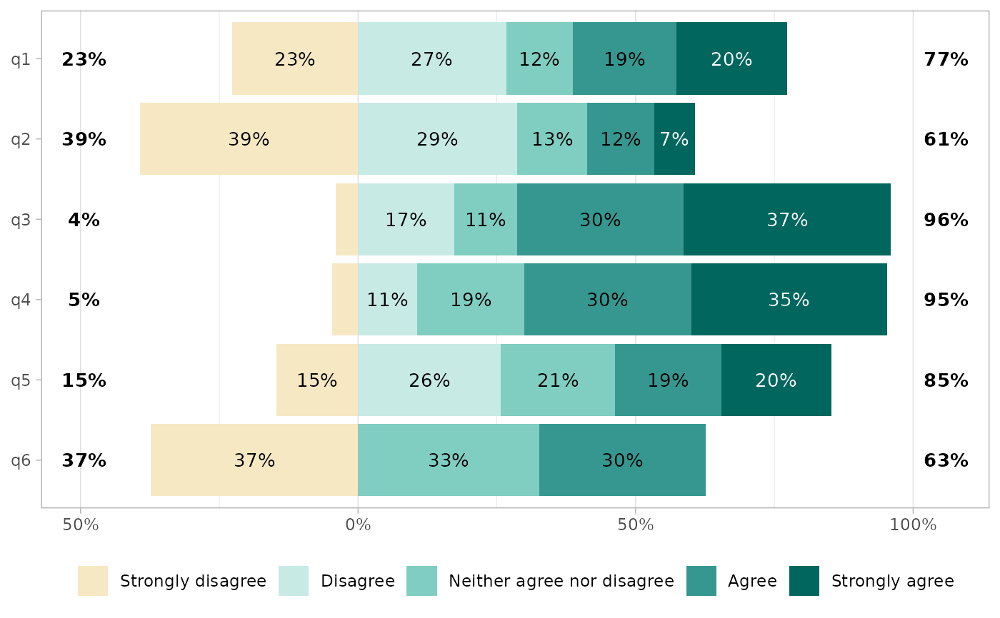
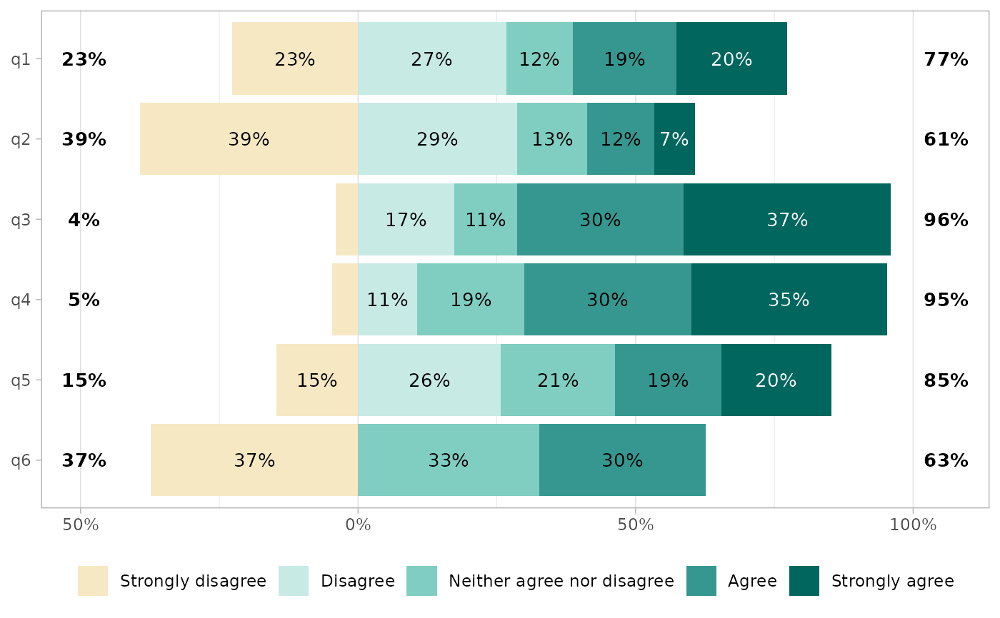

Combines several factor variables using the same list of ordered levels (e.g. Likert-type scales) into a unique data frame and generates a centered bar plot.
Usage
gglikert(
data,
include = dplyr::everything(),
weights = NULL,
y = ".question",
variable_labels = NULL,
sort = c("none", "ascending", "descending"),
sort_method = c("prop", "prop_lower", "mean", "median"),
sort_prop_include_center = totals_include_center,
factor_to_sort = ".question",
exclude_fill_values = NULL,
cutoff = NULL,
data_fun = NULL,
add_labels = TRUE,
labels_size = 3.5,
labels_color = "auto",
labels_accuracy = 1,
labels_hide_below = 0.05,
add_totals = TRUE,
totals_size = labels_size,
totals_color = "black",
totals_accuracy = labels_accuracy,
totals_fontface = "bold",
totals_include_center = FALSE,
totals_hjust = 0.1,
y_reverse = TRUE,
y_label_wrap = 50,
reverse_likert = FALSE,
width = 0.9,
facet_rows = NULL,
facet_cols = NULL,
facet_label_wrap = 50,
symmetric = FALSE
)
gglikert_data(
data,
include = dplyr::everything(),
weights = NULL,
variable_labels = NULL,
sort = c("none", "ascending", "descending"),
sort_method = c("prop", "prop_lower", "mean", "median"),
sort_prop_include_center = TRUE,
factor_to_sort = ".question",
exclude_fill_values = NULL,
cutoff = NULL,
data_fun = NULL
)
gglikert_stacked(
data,
include = dplyr::everything(),
weights = NULL,
y = ".question",
variable_labels = NULL,
sort = c("none", "ascending", "descending"),
sort_method = c("prop", "prop_lower", "mean", "median"),
sort_prop_include_center = FALSE,
factor_to_sort = ".question",
data_fun = NULL,
add_labels = TRUE,
labels_size = 3.5,
labels_color = "auto",
labels_accuracy = 1,
labels_hide_below = 0.05,
add_median_line = FALSE,
y_reverse = TRUE,
y_label_wrap = 50,
reverse_fill = TRUE,
width = 0.9
)Arguments
- data
a data frame
- include
variables to include, accepts tidy-select syntax
- weights
optional variable name of a weighting variable, accepts tidy-select syntax
- y
name of the variable to be plotted on
yaxis (relevant when.questionis mapped to "facets, see examples), accepts tidy-select syntax- variable_labels
a named list or a named vector of custom variable labels
- sort
should the factor defined by
factor_to_sortbe sorted according to the answers (seesort_method)? One of "none" (default), "ascending" or "descending"- sort_method
method used to sort the variables:
"prop"sort according to the proportion of answers higher than the centered level,"prop_lower"according to the proportion lower than the centered level,"mean"considers answer as a score and sort according to the mean score,"median"used the median and the majority judgment rule for tie-breaking.- sort_prop_include_center
when sorting with
"prop"and if the number of levels is uneven, should half of the central level be taken into account to compute the proportion?- factor_to_sort
name of the factor column to sort if
sortis not equal to"none"; by default the list of questions passed toinclude; should be one factor column of the tibble returned bygglikert_data(); accepts tidy-select syntax- exclude_fill_values
Vector of values that should not be displayed (but still taken into account for computing proportions), see
position_likert()- cutoff
number of categories to be displayed negatively (i.e. on the left of the x axis or the bottom of the y axis), could be a decimal value:
2to display negatively the two first categories,2.5to display negatively the two first categories and half of the third,2.2to display negatively the two first categories and a fifth of the third (see examples). By default (NULL), it will be equal to the number of categories divided by 2, i.e. it will be centered.- data_fun
for advanced usage, custom function to be applied to the generated dataset at the end of
gglikert_data()- add_labels
should percentage labels be added to the plot?
- labels_size
size of the percentage labels
- labels_color
color of the percentage labels (
"auto"to usehex_bw()to determine a font color based on background color)- labels_accuracy
accuracy of the percentages, see
scales::label_percent()- labels_hide_below
if provided, values below will be masked, see
label_percent_abs()- add_totals
should the total proportions of negative and positive answers be added to plot? This option is not compatible with facets!
- totals_size
size of the total proportions
- totals_color
color of the total proportions
- totals_accuracy
accuracy of the total proportions, see
scales::label_percent()- totals_fontface
font face of the total proportions
- totals_include_center
if the number of levels is uneven, should half of the center level be added to the total proportions?
- totals_hjust
horizontal adjustment of totals labels on the x axis
- y_reverse
should the y axis be reversed?
- y_label_wrap
number of characters per line for y axis labels, see
scales::label_wrap()- reverse_likert
if
TRUE, will reverse the default stacking order, seeposition_likert()- width
bar width, see
ggplot2::geom_bar()- facet_rows, facet_cols
A set of variables or expressions quoted by
ggplot2::vars()and defining faceting groups on the rows or columns dimension (see examples)- facet_label_wrap
number of characters per line for facet labels, see
ggplot2::label_wrap_gen()- symmetric
should the x-axis be symmetric?
- add_median_line
add a vertical line at 50%?
- reverse_fill
if
TRUE, will reverse the default stacking order, seeggplot2::position_fill()
Details
You could use gglikert_data() to just produce the dataset to be plotted.
If variable labels have been defined (see labelled::var_label()), they will
be considered. You can also pass custom variables labels with the
variable_labels argument.
Examples
library(ggplot2)
library(dplyr)
#>
#> Attaching package: ‘dplyr’
#> The following objects are masked from ‘package:stats’:
#>
#> filter, lag
#> The following objects are masked from ‘package:base’:
#>
#> intersect, setdiff, setequal, union
likert_levels <- c(
"Strongly disagree",
"Disagree",
"Neither agree nor disagree",
"Agree",
"Strongly agree"
)
set.seed(42)
df <-
tibble(
q1 = sample(likert_levels, 150, replace = TRUE),
q2 = sample(likert_levels, 150, replace = TRUE, prob = 5:1),
q3 = sample(likert_levels, 150, replace = TRUE, prob = 1:5),
q4 = sample(likert_levels, 150, replace = TRUE, prob = 1:5),
q5 = sample(c(likert_levels, NA), 150, replace = TRUE),
q6 = sample(likert_levels, 150, replace = TRUE, prob = c(1, 0, 1, 1, 0))
) |>
mutate(across(everything(), ~ factor(.x, levels = likert_levels)))
gglikert(df)
gglikert(df, include = q1:3) +
scale_fill_likert(pal = scales::brewer_pal(palette = "PRGn"))
#> Scale for fill is already present.
#> Adding another scale for fill, which will replace the existing scale.
gglikert(df, sort = "ascending")
 # \donttest{
gglikert(df, sort = "ascending", sort_prop_include_center = TRUE)
# \donttest{
gglikert(df, sort = "ascending", sort_prop_include_center = TRUE)
 gglikert(df, sort = "ascending", sort_method = "mean")
gglikert(df, reverse_likert = TRUE)
gglikert(df, add_totals = FALSE, add_labels = FALSE)
gglikert(
df,
totals_include_center = TRUE,
totals_hjust = .25,
totals_size = 4.5,
totals_fontface = "italic",
totals_accuracy = .01,
labels_accuracy = 1,
labels_size = 2.5,
labels_hide_below = .25
)
gglikert(df, exclude_fill_values = "Neither agree nor disagree")
if (require("labelled")) {
df |>
set_variable_labels(
q1 = "First question",
q2 = "Second question"
) |>
gglikert(
variable_labels = c(
q4 = "a custom label",
q6 = "a very very very very very very very very very very long label"
),
y_label_wrap = 25
)
}
#> Loading required package: labelled
gglikert(df, sort = "ascending", sort_method = "mean")
gglikert(df, reverse_likert = TRUE)
gglikert(df, add_totals = FALSE, add_labels = FALSE)
gglikert(
df,
totals_include_center = TRUE,
totals_hjust = .25,
totals_size = 4.5,
totals_fontface = "italic",
totals_accuracy = .01,
labels_accuracy = 1,
labels_size = 2.5,
labels_hide_below = .25
)
gglikert(df, exclude_fill_values = "Neither agree nor disagree")
if (require("labelled")) {
df |>
set_variable_labels(
q1 = "First question",
q2 = "Second question"
) |>
gglikert(
variable_labels = c(
q4 = "a custom label",
q6 = "a very very very very very very very very very very long label"
),
y_label_wrap = 25
)
}
#> Loading required package: labelled
 # Facets
df_group <- df
df_group$group <- sample(c("A", "B"), 150, replace = TRUE)
gglikert(df_group, q1:q6, facet_rows = vars(group))
# Facets
df_group <- df
df_group$group <- sample(c("A", "B"), 150, replace = TRUE)
gglikert(df_group, q1:q6, facet_rows = vars(group))
 gglikert(df_group, q1:q6, facet_cols = vars(group))
gglikert(df_group, q1:q6, facet_cols = vars(group))
 gglikert(df_group, q1:q6, y = "group", facet_rows = vars(.question))
gglikert(df_group, q1:q6, y = "group", facet_rows = vars(.question))
 # Custom function to be applied on data
f <- function(d) {
d$.question <- forcats::fct_relevel(d$.question, "q5", "q2")
d
}
gglikert(df, include = q1:q6, data_fun = f)
# Custom center
gglikert(df, cutoff = 2)
# Custom function to be applied on data
f <- function(d) {
d$.question <- forcats::fct_relevel(d$.question, "q5", "q2")
d
}
gglikert(df, include = q1:q6, data_fun = f)
# Custom center
gglikert(df, cutoff = 2)
 gglikert(df, cutoff = 1)

gglikert(df, cutoff = 1, symmetric = TRUE)
gglikert(df, cutoff = 1)

gglikert(df, cutoff = 1, symmetric = TRUE)
 # }
gglikert_stacked(df, q1:q6)
gglikert_stacked(df, q1:q6, add_median_line = TRUE, sort = "asc")
# \donttest{
gglikert_stacked(df_group, q1:q6, y = "group", add_median_line = TRUE) +
facet_grid(rows = vars(.question))
# }
# }
gglikert_stacked(df, q1:q6)
gglikert_stacked(df, q1:q6, add_median_line = TRUE, sort = "asc")
# \donttest{
gglikert_stacked(df_group, q1:q6, y = "group", add_median_line = TRUE) +
facet_grid(rows = vars(.question))
# }